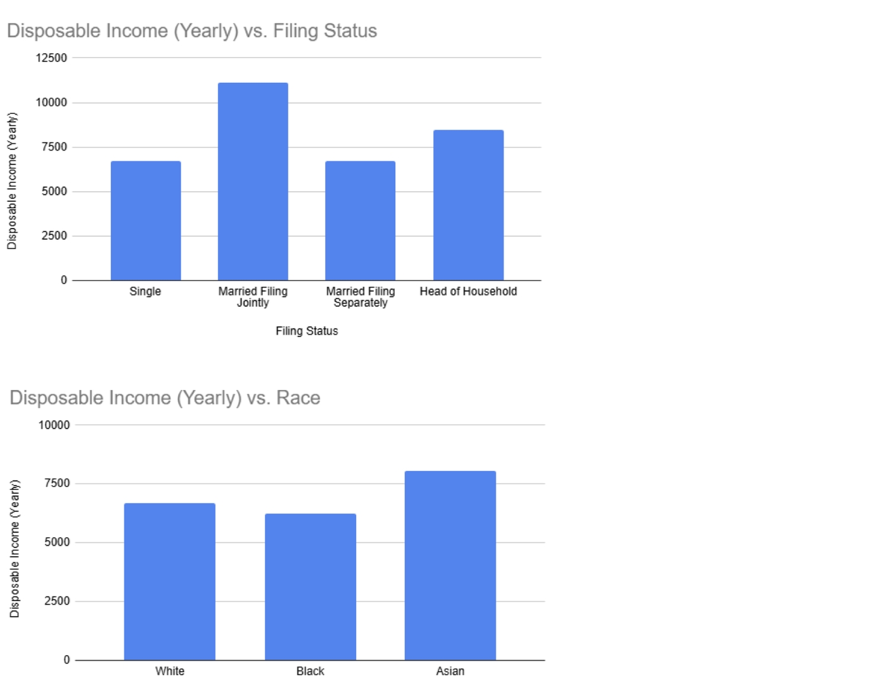
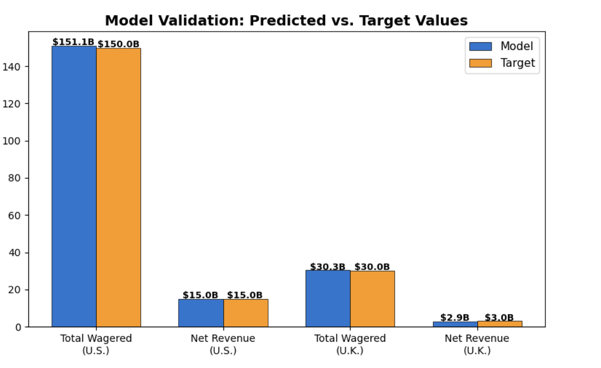

M3 Math Challenge 2026Modeling the Financial Impact of Sports Betting
- SIAM M3 Challenge · Triage Advancer (top ~17%)
- Role: Team Lead · five-person team
- Python
- NumPy
- pandas
- Matplotlib
- Statistical modeling
Online sports betting has become increasingly popular, but how much do people actually win or lose, and how do those losses affect different groups? For the 2026 M3 Challenge, our team combined demographic spending data, probability distributions, and Monte Carlo simulation to explore the financial effects of sports betting in the U.S. and U.K.
Estimating disposable income
We started with a model that estimates how much money a person has left after taxes and everyday expenses. This gave us a baseline for how much financial flexibility different groups might have.

Method: spending rates and federal taxesConsumer Expenditure Survey data, tax brackets, sensitivity analysis
Using data from the U.S. Consumer Expenditure Survey and federal income-tax brackets, we considered variables including age, income, education, housing, household size, region, and occupation. We calculated spending rates for different demographic groups and incorporated progressive federal taxation to estimate annual and monthly disposable income.
We then changed individual demographic inputs, one at a time from a base person, to see which characteristics had the greatest influence on the model’s predictions.
Simulating a year of betting
Our second model used Monte Carlo simulation to estimate annual sports-betting gains and losses. Instead of only calculating one expected outcome, it let us look at the whole spread of possible results. One interesting finding was that larger individual bets increased how widely outcomes varied, even though expected losses depend only on the total amount wagered.

Method and probability assumptionsSurvey-based behavior, a binomial win model, a 10% house edge
We simulated individuals with different demographic characteristics and betting behaviors, using survey-based probabilities to decide factors such as account ownership, wagering amounts, betting frequency, and bet size.
To simulate wins and losses, we used a binomial model with an assumed 10% house edge, which we derived from the wagering and revenue figures given in the challenge (about $150 billion wagered and $15 billion in revenue).
This helped illustrate the difference between expected value and risk: someone may have short-term wins while still facing a negative long-term expectation.
Measuring the real financial impact
For the final problem, we combined the first two models. Rather than only looking at dollar losses, we compared estimated annual gambling losses with disposable income to see how heavily they could affect different groups. Adults aged 18–34 without a college degree could lose about 10.5% of their disposable income to sports betting, roughly 1.3 months of their modeled budget.
| Age | Education | Disposable income | Mean loss | % of disposable income | Months lost |
|---|---|---|---|---|---|
| 18–34 | No college | $3,396 | $355 | 10.5% | 1.3 |
| 18–34 | BA+ | $6,011 | $302 | 5.0% | 0.6 |
| 35–49 | No college | $6,941 | $322 | 4.6% | 0.6 |
| 35–49 | BA+ | $15,285 | $251 | 1.6% | 0.2 |
| 50–64 | No college | $7,724 | $241 | 3.1% | 0.4 |
| 50–64 | BA+ | $16,008 | $208 | 1.3% | 0.2 |
| 65+ | No college | $3,159 | $173 | 5.5% | 0.7 |
| 65+ | BA+ | $7,436 | $185 | 2.5% | 0.3 |
From our report. Similar dollar losses can create very different burdens depending on income. We also translated losses into everyday comparisons, like grocery spending and hours of minimum-wage work.
Assumptions and limits
Models depend heavily on their underlying assumptions. We had to make approximations because the available surveys didn’t capture every combination of demographic characteristics and betting behaviors. We ran sensitivity analyses to see how assumptions about betting frequency and wager amounts changed our predictions. Although our model reproduced several aggregate figures reasonably well, its results are simulations, not direct measurements of individual gambling outcomes.
What I learned
This project gave me more experience with probabilistic modeling and computational simulation. Monte Carlo simulation let us explore how results could vary across thousands of simulated people, not just one average. It helped me better understand uncertainty, quantitative decision-making, and how computational models can be used to investigate economic and social questions.